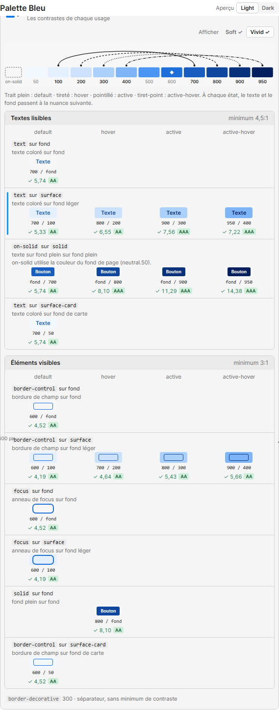

Onglet Vérification, palette Bleu (#1E6FD9, deux intensités), thème Light, texte des boutons blanc, Vivid affiché. À gauche, la carte telle que la galerie la dessine aujourd'hui. À droite, la carte proposée : une ligne par garantie. Cliquer une ligne déplace l'éventail sur la réglette.
Aujourd'hui

Proposé
Ce qui change, et pourquoi
Une ligne par garantie au lieu d'une par paire. Les dix-neuf paires deviennent sept garanties (P4). Chaque ligne porte les variables en police de code, puis le libellé du lexique dessous, comme aujourd'hui, sans numéro. Les deux blocs restent : textes lisibles à 4,5:1, éléments visibles à 3:1.
Quatre colonnes de fonds : la page, puis default, hover, pressed. Le quatrième rang, active-hover, disparaît, et active devient pressed. La page prend la première colonne : c'est le seul fond hors de la palette contre lequel le plugin mesure (P9). Une garantie qui ne vise pas un fond laisse sa case vide.
L'éventail remplace l'escalier. Le texte reste à la même nuance dans tous les états (texte constant) : la réglette tire un seul départ, la nuance du texte, vers chacun de ses fonds. La légende dit les quatre traits, et qu'à chaque état seul le fond change. Deux cases avant la 50 : la page, et le texte des boutons en tirets, départ de la garantie du texte des boutons.
solid/foreground nomme le réglage. La note du texte des boutons dit « suit le réglage Texte des boutons du thème Light : blanc », au lieu de « on-solid utilise la couleur du fond de page ». Ses spécimens portent le blanc ou le noir purs.
Les lignes qui disparaissent : text sur surface-card et border-control sur surface-card, puisque la carte n'est plus une teinte de la palette ; focus sur surface devient la deuxième case de la ligne de l'anneau.
Ce qui ne change pas : la forme de la carte, le choix « Afficher » Soft et Vivid, les spécimens, les numéros « 800 / 100 », le ratio, le niveau AA ou AAA, la ligne choisie marquée d'un trait bleu, et les liens d'une garantie manquée (« Ajuster la référence » et les autres), dont la forme reste celle de l'état garantie-en-echec de la galerie.